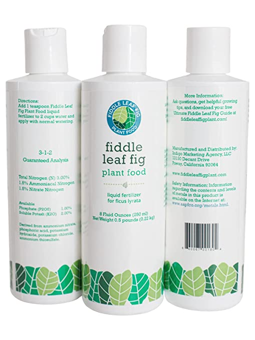

Fiddle leaf figs, or ficus lyrata, love to be fed! Their large leaves and relatively fast growth demand plenty of nutrition. But how often should you fertilize? The rate that you should fertilize your fiddle leaf fig depends on the season you’re in, how fast you want your plant to grow, and the type of fertilizer you are using.
Plants often suffer because of under-fertilization, which leads to slow growth and yellowing leaves. Proper fertilization will give your plant the best health and keep it deep green and gorgeous. Let’s expand more on each of these factors now.
But before we start, keep in mind that as pre-requisite for growth, you must keep your plant in ideal growing conditions light and water-wise. An unhealthy plant that’s fighting for its life, that’s overwatered or dried-out, is not going to grow, no matter how much fertilizer you add. Follow the tips on this blog to help you with all things plant care if you need it. See The Basics of Fiddle Leaf Fig Tree Care as a starting point for ficus lyrata specific tips, or the universal advice on How to Water your Indoor Plants the Right Way, which covers all types of houseplants.

Houseplants are most active during the spring and summer because of the abundance of light. Fertilization is most important during these times. Your fiddle leaf plant is begging for nutrients and cannot grow and prosper without them.
All fiddle leaf fig plants need nutrients, whether they are actively growing or not. But those that are growing a lot will deplete their soil of nutrients more quickly. Your fertilizing schedule depends on how fast you’d like your plant to grow.
If you have a young plant that you’d like to grow quickly, you can fertilize with our custom-formulated Fiddle Leaf Fig Plant Food each and every time you water. This ensures that your plant gets a gentle but steady supply of the nutrition it needs. Fiddle leaf figs can grow 12 to 18 inches each year when fed properly and given an abundance of natural light!
Understanding a bit about what happens inside the potting mix of your houseplant can help you care for it better. As always, I’m going to be using simple terms to explain the concepts, so you don’t need to have an MA in horticultural science. The web of roots of the plant constitutes its main feeding organ, where it receives all the nutrients it needs to live and grow properly.
When you buy a plant, the potting mix comes full of nutrients (the natural nutrients in the soil plus these little capsules added to the potting mix by the grower). The soil contains three vital natural elements for the plant: K, N, and P. These basic elements are responsible for leaf vitality, root health, and even flower blooms. The ideal proportion of each element depends on the species of your plant. After ending up in our homes, the plant keeps eating the nutrients out from the soil, but nutrients don’t get replenished until you either you add fertilizer, add soil to top-up, or repot into fresh soil. The plant needs more nutrients when it’s growing new leaves, or expanding the roots. The right amount depends on the season.
Overwatering your plant means that the soil will get saturated with water. If your pot has too little drainage to get rid of this excess water, the plant will not be able to absorb it either. As strange as it may seem, soil is naturally aired and oxygenated, but in overwatered soil the water blocks the oxygen. Oxygen is a key element of healthy soil and therefore root function. Without oxygen from the air, the soil starts to rot, and in turn, the roots become diseased, easily affected by fungus, etc. After some time, the disease in the rotten roots will start to spread on to the leaves, which is when you usually start to see black dots or white powdery mold, etc. and call it a ‘plant SOS’. Caring for the soil’s health is almost everything in keeping your plant healthy on the outside. So first, avoid potting your plant straight into a pot, unless it’s self-watering. It’s actually a good idea to keep the original plastic pot that has built-in drainage holes in it. This way excess water can run through. Even better, you can start to water your plant from below and control the amount of water it’s going to drink.